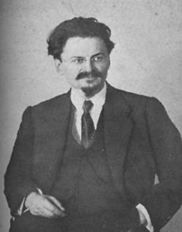

Troçki (1879-1940)

1917 Rus ihtilalinin önde gelen isimlerindendir. Sovyetler Birliðinin kurulmasýnda, ihtilal sonrasý iç isyanlarýn ve ayaklanmalarýn bastýrýlmasýnda birinci derecede rol oynamýþtýr. Kýzýlordunun kurucusu olarak kabul edilmektedir. Özellikle iç karýþýklýklarda baþ vurduðu sert ve acýmasýz tedbirleriyle dikkatleri üzerine çekmiþtir. Lenin'den sonra Sovyetlerin en güçlü ikinci adamý olmuþtur. Lenin'in ölümünden sonra Stalin ile giriþtiði iktidar mücadelesini kaybetmiþ ve ülkeyi terk etmek zorunda kalmýþtýr. Risâle-i Nur'da, bir hadisin açýklandýðý bölümde ismi geçmektedir (Þuâlar, s. 507). Yahudi olan Troçki'nin asýl adý Leon Davidoviç Bronþtayn'dýr. Troçki, takma adý olup 1902 yýlýndan itibaren kullanmaya baþlamýþtýr.Troçki, 1879 yýlýnda Güney Ukrayna'da bulunan Kerson'da doðdu. Dokuz yaþlarýnda iken Odesa'da bulunan teyzesinin yanýna giderek burada eðitim gördü. Daha sonra eðitimine devam etmek gayesiyle Nikolayev'e gitti. Matematik ve hukuk alanýnda yüksek öðrenim yaptý. Öðrenciliði sýrasýnda sosyal demokrat çevrelerle temasa geçti ve devrimci guruplara dahil oldu. Marksizm görüþünü benimsedi. Bu fikirlerin etkisiyle, Güney Rusya Ýþçi Birliði adlý gizli bir örgütün kurucularý arasýnda yer aldý. 1898 yýlýnda bu gizli örgüte mensubiyetinden dolayý Çarlýk polisi tarafýndan yakalanarak hapse konuldu. Ýki yýl tutuklu kaldý.
Hapis hayatýndan sonra Sibirya'ya sürgüne yollandý. "Troçki" takma adýný bu sýralarda kullanmaya baþladý. Yaklaþýk iki yýl sürgün kaldýktan sonra firar ederek önce Viyana'ya, akabinde Londra'ya gitti, burada Lenin'le buluþtu. Bir yýl sonra Londra'da toplanan Rus Sosyal Demokrat Ýþçi Partisinin kongresine katýldý. Bu kongrede parti içinde Bolþevikler ve Menþevikler olmak üzere iki hizip oluþtu. Bolþevik Lenin'e karþý Troçki Menþevik kanatta yer aldý. Ancak, bir yýl sonra Menþeviklerin görüþlerine katýlmadýðýný belirterek Lenin'in yanýna geçti.
1897'de mücadeleye Narodnik (halkçýlýk hareketi) düþünceleri savunarak atýldý. Sürgün koþullarýnda okuduðu Marksist klasiklerin etkisiyle bir süre sonra kendisini 'Sosyal Demokrat' olarak ilan etti. 4 Mayýs 1917'de ülkeye döndüðünde geçici hükümete karþý Bolþevik Parti'ye yakýn bir tutum aldý.
Troçki, Rusya'ya döndükten sonra Petrograd Sovyeti Baþkanlýðýna seçildi. Bu sýfatýyla Rus ihtilalinin alt yapýsýnýn hazýrlanmasýnda, ayaklanmalarýn örgütlenmesinde ve yönetiminde aktif ve önemli bir rol üstlendi. Ýhtilalin gerçekleþmesinde ve Rus Çarlýðýnýn yýkýlmasýnda büyük pay sahibi olanlardan birisi oldu. Devrim sonrasýnda Lenin'in önemli adamlarýndan birisi oldu. Önce Dýþiþleri, daha sonra Savaþ Bakanlýðýna getirildi. En önemli faaliyeti ise Kýzýlordu ile ilgili olanýdýr. Baþkumandan sýfatýyla Kýzýlordunun kurulmasý görevi kendisine verildikten sonra bunu gerçekleþtirdi. Ýhtilal sonrasý meydana gelen karýþýklýklar ve iç ayaklanmalar boyunca bu orduyu idare etti.
Troçki, ihtilal sonrasý meydana gelen ayaklanma ve gösteriler karþýsýnda çok sert tedbirlere baþvurdu ve kan dökmekten hiç çekinmedi. 1918 yýlýnda muhaliflerin yaþadýðý Moskova'nýn bazý mahallelerini top ateþine tutarak, tümden yok edici tedbirlere baþvurdu. Ýç ayaklanmalar boyunca içinde dolaþtýðý ve Kýzýlorduyu buradan idare ettiði "Zýrhlý Tren"i ile dikkatleri çekti. Sürekli bu trenle dolaþtý.
1917 sonrasýnda, baðýmsýzlýklarýna kavuþma ümidini besleyen Türklere karþý da çok sert tedbirlere baþvuruldu. Ýstiklalini elde etmek isteyen Azerbaycan ve Türkistan baþta olmak üzere Türklerin yaþadýðý bölgelerde çok sayýda insan Kýzýlordu tarafýndan katledildi. Bu toplumlarýn ileri gelenleri öldürüldü veya sürgüne yollandý. Türklerin maruz kaldýðý bu katliamlarda en büyük pay sahiplerinin baþýnda, Lenin'den sonra en güçlü adam olan Troçki yer aldý. Devrim sonrasýnda milyonlarca insanýn kanýný akýtmakta hiç tereddüt göstermedi.
Troçki, Komünist Enternasyonalin kurulmasýnda da önemli rol oynadý. Ýlk beþ kongrenin programlarý ve bildirileri kendisi tarafýndan hazýrlandý. Meydana gelen sorunlarýn çözümünde sergilediði aþýrý tutum ve baþ vurulmasýný istediði yöntemler sebebiyle, parti çoðunluðuyla ters düþtü. Sendikalarýn baðýmsýzlýðýna tahammülü olmayýp bu örgütlerin devletleþtirilmesini ve devlete baðýmlý bir þekilde faaliyet göstermelerini savundu.
Lenin'in 1924 yýlýndaki ölümünden sonra Stalin ile iktidar mücadelesine giriþti. Bu mücadelede giderek güç kaybetti ve teker teker elinde bulunan yetkilerini kaybetti. Önce Savaþ komiserliði görevinden alýndý. Daha sonra Siyasi Büro ve akabinde Komünist Enternasyonal yürütme kurulu merkez komitesinden alýndý. Taraftarlarýnýn Sen-Petersburg'da sokak gösterilerine kalkýþmalarýndan sonra parti üyeliðinden de atýldý. Böylece iki yýl zarfýnda tüm yetkileri elinde alýndý.
1927 yýlýnda baþlayan sürgün hayatý Alma-Ata ile baþladý. Ýki yýl sonra da Rus topraklarýndan kovuldu. 1929-33 yýllarý arasýnda Ýstanbul Büyükada'da sürgün yaþadý. Bu sýrada bazý hatýra ve düþüncelerini kaleme aldý. Ýstanbul'dan sonra Fransa'ya giden Troçki buradan da sýnýrdýþý edildi. Akabinde Norveç'e gittiyse de burayý da terk etmek zorunda kaldý. Meksika'ya giderek Mexico City'ye yerleþti. 1940 yýlýnda Ýspanyalý bir komünist, gazeteci kýlýðýnda, röportaj yapmak bahanesiyle kaldýðý evine gitti. Fýrsatý bulduðu bir sýrada, baþýna baltayla vurmak suretiyle aðýr þekilde yaraladý. Troçki, aldýðý bu aðýr yaranýn etkisiyle öldü.
Bediüzzaman, "Deccalýn mühim kuvveti Yahudidir. Yahudiler severek tabi olurlar" mealindeki hadis-i þerifi izah ederken; bu hadisin bir tevilinin Rusya'da zuhur ettiðini belirtmektedir. Troçki örneðinde olduðu gibi, komünist ihtilalin Rusya'da gerçekleþmesinde ve Çarlýðýn yýkýlmasýnda Yahudilerin büyük bir rolü olmuþtur. Bediüzzaman Yahudilerin ihtilale destek olmasýný da þu þekilde açýklanmaktadýr:
"Çünkü, her hükümetin zulmünü gören Yahudiler, Almanya memleketinde kesretle toplanýp intikamlarýný almak için, komünist komitesinin tesisinde mühim bir rol ile Yahudi milletinden olan Troçki namýnda dehþetli bir adamý, Rusya'nýn Baþkumandanlýðýna ve terbiyegerdeleri olan meþhur Lenin'den sonra Rus hükümetinin baþýna geçirerek Rusya'nýn baþýný patlatýp bin senelik mahsulatýný yaktýrdýlar. Büyük Deccalýn komitesini ve bir kýsým icraatýný gösterdiler. Ve sair hükümetlerde dahi ehemmiyetli sarsýntýlar verip karýþtýrdýlar." (Þualar, s. 507)
Troçki, Rusya'da dinin etkisinin azaltýlmasý ve alternatiflerin sunulmasýnda da fikir üreten ve yönlendiren kiþilerden biridir. Ona göre en etkili araç ve silah sinemadýr ve mutlaka sinemanýn gücünden istifade edilmesi gerekir. 1923 yýlýnda "Votka, Din ve Sinema" baþlýðýný taþýyan makalesinde, konuyla ilgili fikirlerini þöyle ifade ider: "Eðlenceyi, ahlâk hocalarýnýn vaazlarýndan, hatta her türlü eðitim gözeticisinden uzak bir kolektif silah haline getirmeliyiz" Sosyalist eðitim için harcanacak enerjinin bu alana kanalize edilmesi gerektiðini ileri sürer. Ona göre kilisenin en büyük rakibi sinemadýr ve ne pahasýna olursa olsun sahip çýkýlmasý gereken bir alandýr.